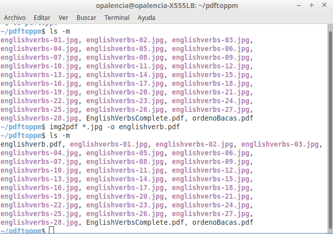

Convertir imágenes a un archivo pdf > img2pdf¶
Nombre del comando: img2pdf
Man page online: no tiene
Descripción: Convierte una serie de imágenes individuales a un archivo pdf. Fácil de usar y si trabajas con imágenes todo el tiempo, recomendaría que pruebes las diferentes opciones que tiene, leyendo la documentación respectiva por supuesto.
Man page local: $ img2pdf -h > img2pdf.txt
Instalado por defecto: No, es un proyecto independiente. Se puede instalar siguiendo la documentación oficial en el siguiente enlace.
https://gitlab.mister-muffin.de/josch/img2pdf
Algunas Opciones:
-h, --help Muestre la documentación respectiva del comando.
-v, --verbose Explique qué se está haciendo.
-o out, --output out Convierta los resultados a un solo archivo pdf. Es obligatorio agregar este parámetro si lo que se busca es crear un archivo pdf con las imágenes ingresadas, de lo contrario solo mostrará información ilegible para el ojo humano.
Nota
Para facilitar las cosas se deben copiar las imágenes (cuando son muchas) que se quieren convertir a un archivo pdf en una nueva carpeta y que tengan el mismo formato, ya sea png, jpg u otro. Si son imágenes con distinto formato, entonces habrá que escribir el nombre y formato de dichas imágenes de manera individual, ver ejemplo 2 mas abajo. Para renombrar muchas imágenes con números incrementales, buscar en esta documentación el comando rename Renombrar archivos masivos > rename. Recordar que las imágenes no deben tener espacios en los nombres ni comenzar con caracteres especiales.
Ejemplo 1: $ img2pdf *.jpg -o englishverb.pdf, convierta todas aquellas imágenes .jpg contenidas en la carpeta actual en un archivo pdf llamado “englishverb.pdf”.
Ejemplo 2: $ img2pdf bb.jpg ema200-34-13-vol20.png -o file.pdf, convierta dos imágenes con distinto formato a un solo archivo pdf.